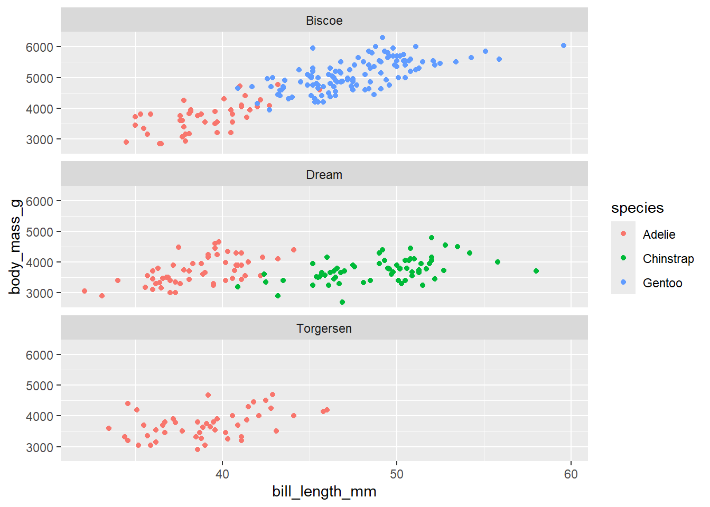
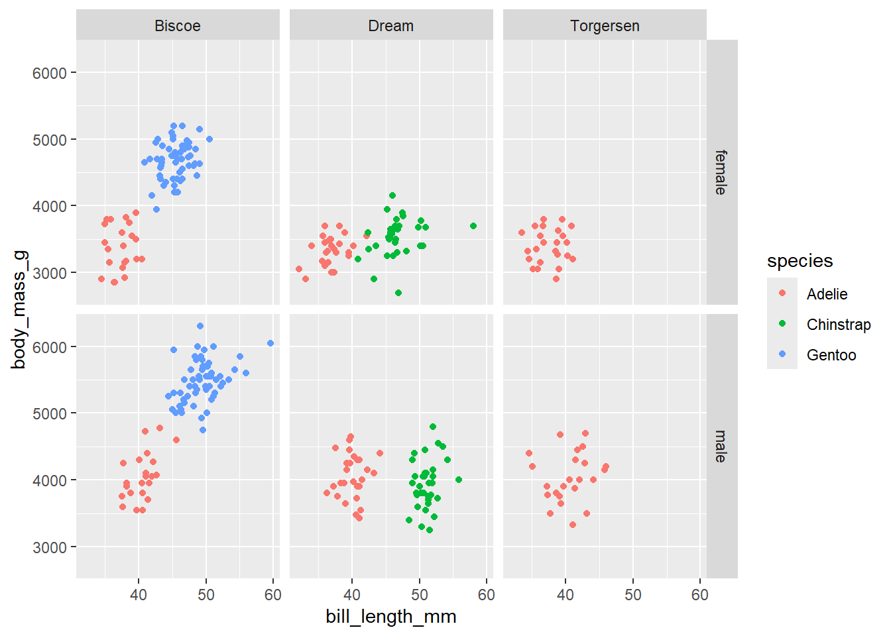
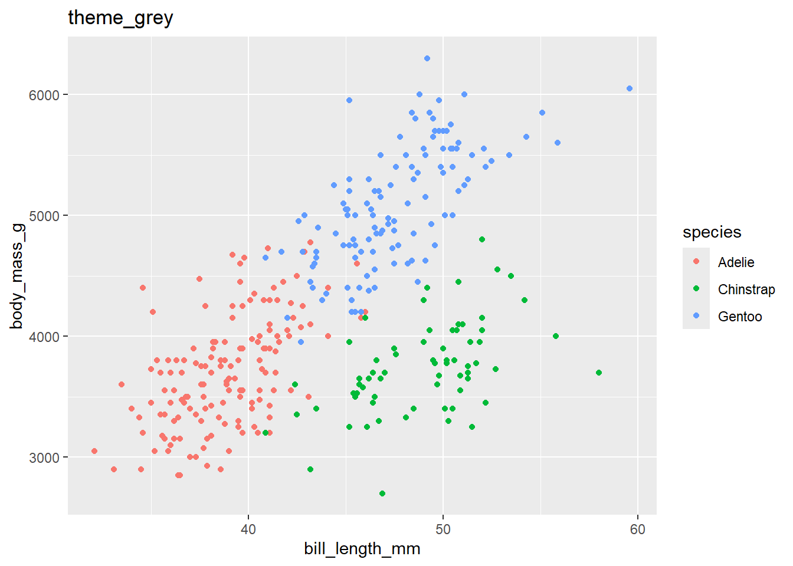
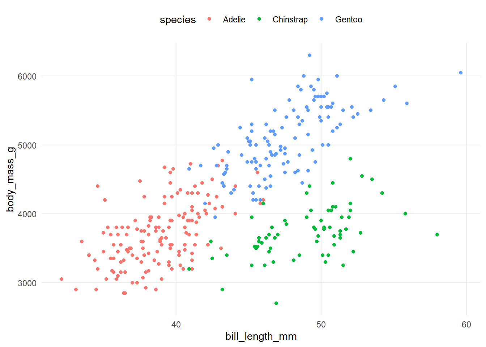
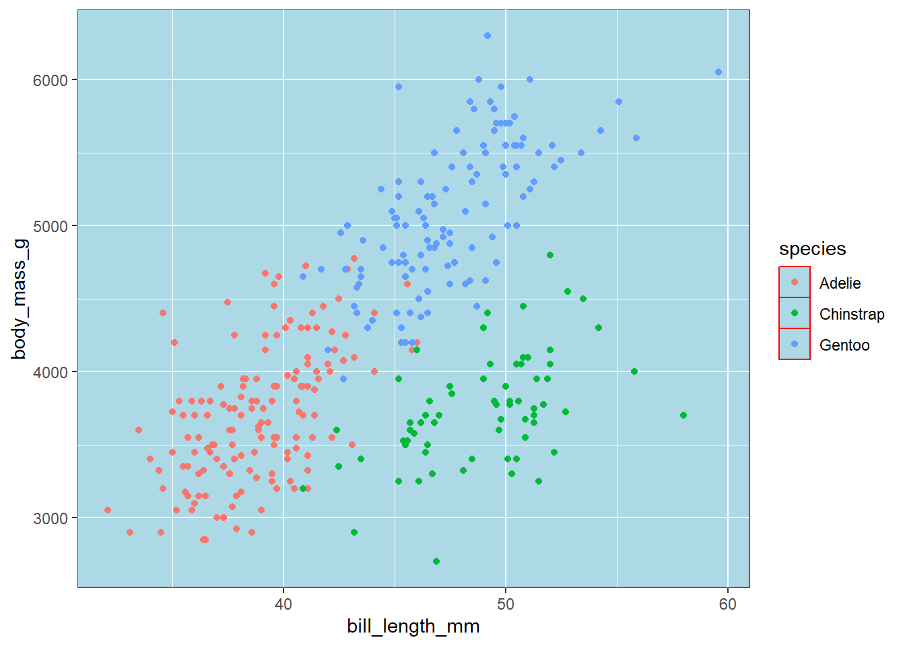
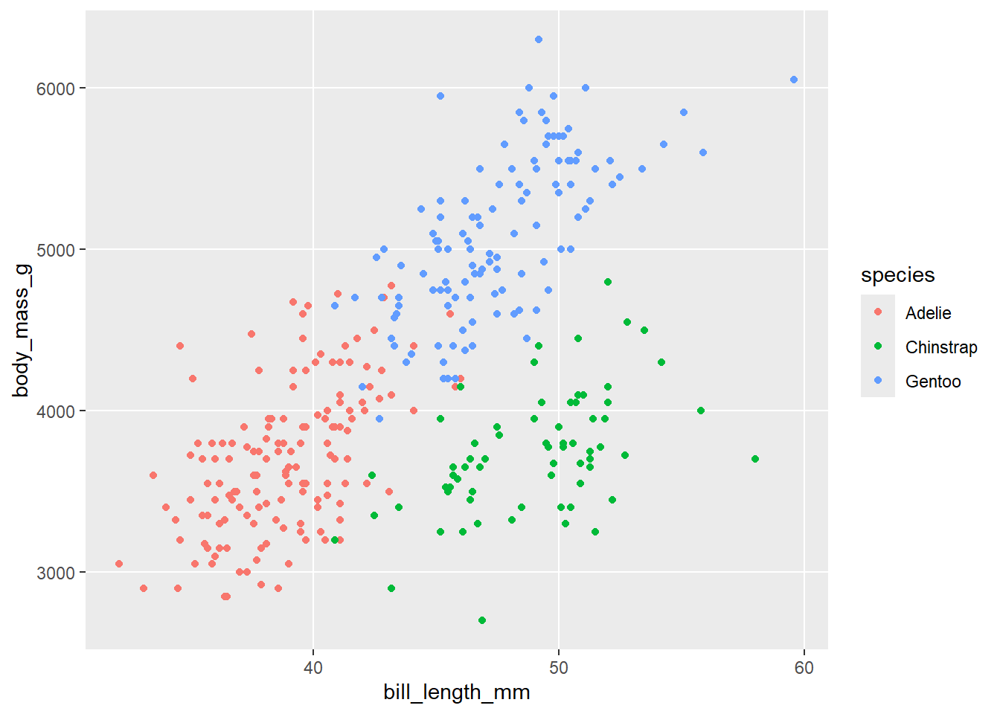
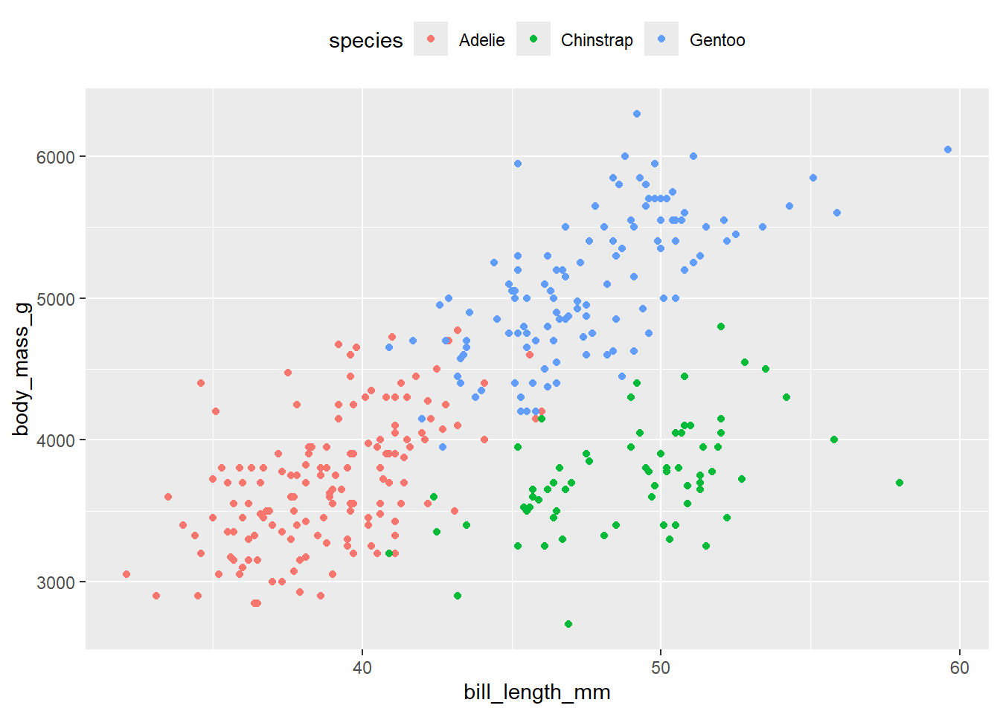
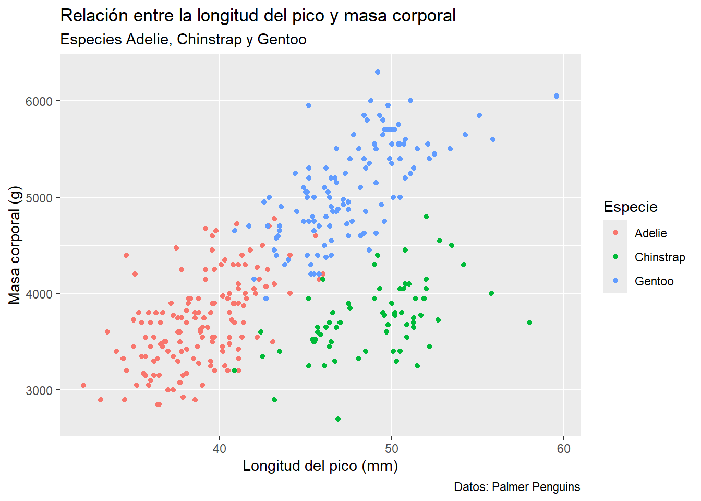

library(tidyverse)
#abrir la base de datos de pingüinos
penguins <- read_csv("data/palmer_penguins.csv") |>
na.omit()Leccion 5: Visualización con ggplot2; Edición
1 Colores, formas y tamaños; mas sobre aes()
En la sección anterior ya habíamos mencionado como el formato de los geoms para distinguir grupos, clases o estructuras:
2 Ajuste manual de color
2.1 Ajuste manual global
Dentro de los aes podemos asignar un color diferente a cada grupo, pero también es posible asignar un color arbitrario a todas los geoms. Para esto, tenemos que establecer el color afuera del aes().
por ejemplo
ggplot(data = penguins)+
geom_point(aes(x = bill_length_mm, y = body_mass_g),
color = "darkblue")De la misma manera, podemos ajustar la transparencia (alpha) o la forma (shape) para todos los puntos u otro geom al establecer este parámetro afuera del aes()
ggplot(data = penguins)+
geom_point(aes(x = bill_length_mm, y = body_mass_g),
shape = 15)
Estilos de puntos disponibles
A continuación se muestran los tipos de figuras disponibles para gráficos de puntos (p. ej. geom_point(). Para modificar el punto se usa el parametro shape = nn)
Nota que los puntos del 21 al 25 son simbolos abiertos por lo que pueden ser rellenados por un color (fill).
2.2 Ajuste manual por grupo
En ejemplos anteriores, donde usamos el argumento color dentro de los _aes()_ ggplot2 asigna una paleta de colores default. Si queremos asignar colores específicos, podemos añadirlos manualmente usando las funciones:
scale_color_manual()scale_fill_manual()
pp <- ggplot(penguins)+
geom_point(aes(x = bill_length_mm, y = body_mass_g, color = species))
# ajustamos el color con scale_color_manual()
pp +
scale_color_manual(values = c("grey55", "orange", "lightblue"))
Tip
Dado que se requiere un vector con los colores que se deseen utilizar, es posible hacer un objeto con un vector de colores y utilizarlo de forma recurrente en distintas figuras. Por ejemplo
# crear un vector con colores
colores <- c("grey55", "orange", "lightblue")
# incluir el vector dentra de la función
pp +
scale_color_manual(values = colores)2.3 Ajuste manual de gradientes
También es posible hacer ajuste manual de gradientes de color utilizando la función scale_color_gradient()
Por ejemplo, podemos gráficar la relación entre la longitud del pico y el peso corporal, con un gradiente de color por el peso corporal
pp2 <- ggplot(penguins)+
geom_point(aes(x = bill_length_mm, y = body_mass_g,
color = body_mass_g))
pp2# ajustar manualmente el gradiente
pp2 +
scale_color_gradient(low = "blue", high = "red")2.4 Seleccionar una nueva paleta de colores
Escoger los colores adecuados para una figura es mas complejo de lo que pudiera parecer y hay varios aspectos que se deben considerar. Puedes encontrar algunas recomendaciones aquí.
Afortunadamente, es posible encontrar diversas paletas prediseñadas, ya sea para datos categóricos, divergentes o secuenciales. Entre las mas comunes están los paquetes:
RColorBrewerViridis
2.4.1 RColorBrewer
2.4.2 viridis

Hay varias opciones de como usar estas paletas de colores:
- Generar un vector con los colores de una paleta en especifico. Esto es mas útil para variables discretas
library(RColorBrewer)
library(viridis)
paleta_brewer <- brewer.pal(name = "Dark2", n = 3)
paleta_virids <- viridis(n = 3)
# usar paleta de RColorBrewer
pp +
scale_color_manual(values = paleta_brewer)# Usar paletta de Viridis
pp +
scale_color_manual(values = paleta_virids)
- Utilizar alguna de las funciones de cada paquete dentro de la figura. Por ejemplo
scale_color_brewer()oscale_color_viridids()
# usar RColorBrewer
pp +
scale_color_brewer(palette = "Dark2")
# usar Viridis
pp +
scale_color_viridis(discrete = TRUE,option = "viridis")Para gradientes
pp2 +
scale_color_distiller(palette = 5)pp2 +
scale_colour_viridis_c(option = "magma")
¿Quieres mas colores?
Existen numerosas opciones en línea para escoger colores y paletas de colores. Una herramienta básica es el Selector de color de Google que te permite generar el código HEX de un color en específico, o la herramienta R Color Palettes que te permite generar un vector con una paleta de colores.
3 Multiples paneles; facet_wrap()y facet_grid()
Otra técnica para mostrar variables categóricas adicionales en un gráfico es el facetado. El facetado crea paneles de gráficos dividiendo los datos en subconjuntos y mostrando el mismo gráfico para cada subconjunto.
Hay dos tipos de facetado: en “cuadrícula” (grid) y “envuelto” (wrap). Ambas funciones son útiles cuando se desea organizar los gráficos con mas muchas variables. Aunque el resultado es similar, las diferencias entre ambas se ve reflejada en la siguiente figura:

Para generar los paneles en un gráfico, simplemente agregas una especificación de facetado con el nombre de una variable precedido por ~.
3.1 facet_wrap()
facet_wrap() genera un listón de paneles de una variable determinada y las envuelve en un orden bidimensional. Es útil cuando se tiene una sola variable con varios niveles.
Vamos a utilizar nuestro objeto ppque generamos mas arriba y vamos a separar los registros de los pingüinos por sexo:
pp +
facet_wrap(~ sex)o por isla
pp +
facet_wrap(~ island)Podemos controlar la orientación de los paneles con ncol y nrow
pp +
facet_wrap(~ island, ncol = 1)
3.2 facet_grid()
facet_grid() despliega el gráfico en una gradilla de dos dimensiones definido por la formula x ~ y, en donde x se despliega en columnas y y en las filas. Usualmente se recomienda colocar la variable con el mayor número de niveles en las columnas, aunque esto dependerá del área de trazado.
Por ejemplo, usando nuetro objeto pp podemos graficar la relación de longitud de pico y peso corporal por sexo y por isla.
pp +
facet_grid(sex ~ island)
3.3 Ajustar las escalas
Tanto para facet_wrap() como facet_grid()es posible ajustar las escalas en los ejes de manera que sea el mismo para todos los paneles (fixed) o que pueda variar entre los paneles (free) utilizando los parámetros:
scales= "fixed": Las escalas en el ejexyyesta fijas en todos los paneles.scales = "free_x": La escala en el ejexes variable y fija en el ejey.scales = "free_y": La escala en el ejeyes variable y fija en el ejex.scales = "free": Las escalas de ambos ejes son variables
pp +
facet_wrap(~ island, scales = "free_y")pp +
facet_wrap(~ island, scale = "free_x")pp +
facet_wrap(~ island, scales = "fixed")
Tip
Las escalas fijas facilitan visualizar patrones entre los paneles; las escalas variables facilitan ver patrones dentro de cada panel
4 Themes
Dentro de ggplot, el sistema de theme() permite tener un control mas fino sobre los elementos visuales ajenos a los datos. Esto significa que el theme() no afecta como los datos son renderizados por los geoms, o como son transformados por las escalas, pero ayudan a mejorar la estética o ajustar el gráfico los requerimientos de la revista o sitio donde será publicado.
4.1 Themes prediseñados
ggplot2 viene con diversos temas (themes) prediseñados con diferencias en cuanto a los colores de fondo, el uso de retícula, borde exterior, etc.
Para usar cualquiera de estos temas en nuestras gráfica simplemente agregamos la capa + theme_xx().
Algunas de las opciones son las siguientes:



4.2 Modificar componentes del tema
Si quieres modificar un componente del tema, puedes usar la función theme() con una estructura como se muestra:
plot + theme(element.name = element.function())
Este cambio puntual de un elemento anulará los ajustes preestablecido en algunos de los themes que vimos anteriormente.
Por ejemplo, si queremos utilizar un theme_minimal() pero quieres eliminar los grids secundarios, podemos utilizar el siguiente codigo:
pp +
theme_minimal()+
theme(panel.grid.minor = element_blank())O si queremos cambiar la posición de la legenda, podemos utilizar el parametro legend_position=
pp +
theme_minimal()+
theme(panel.grid.minor = element_blank(),
legend.position = "top")
Hay cuatro tipos básicos de funciones de elementos incorporados: texto, líneas, rectángulos y en blanco (blank). Cada función de elemento tiene un conjunto de parámetros que controlan la apariencia:
element_text()controla el tamaño, color, tipo de fuente y posición de los elementos de texto, como titulos, ejes, leyendas, etc.
pp +
theme(axis.title = element_text(size = 16, color = "red"))element_line()controla el estilo y tamaño de las líneas dentro del área de trazado
pp +
theme(panel.grid = element_line(linetype = "dashed", color = "red"))- |
element_rect()dibuja y controla el estilo de rectángulos, principalmente para colores de fondo.
pp +
theme(panel.background = element_rect(fill = "lightblue", color = "red"))
element_blank()dibuja nada! Sin embargo, es un elemento que se utiliza muy a menudo para suprimir algún elemento no deseado, como por ejemplo los grids o marcas del eje.
pp +
theme(panel.grid.minor = element_blank())
Otro elemento importante es el control de la posición de la leyenda. Por default, ggplot2 coloca la leyenda a la derecha del gráfico, pero podemos ajustar la posición con el parámetro legend.position = nn donde podemos usar los argumentos "left", "right", "top", "bottom" y "none".
pp +
theme(legend.position = "top")
pp +
theme(legend.position = "none")
Realmente existen muchos elementos que podemos controlar dentro de la función theme() que nos llevaria todo el día revisarlo, pero con los argumentos que vimos anteriormente puedes hacer los principales ajustes de desees. En la siguiente imagen se muestran los principales elementos que puedes modificar:
theme()5 Control de etiquetas (labs())
Otro aspecto básico que podemos controlar en nuestros gráficos son las etiquetas, titulos y subtitulos. Todos estos los podemos ajustar utilizando la función labs()
Dentro de labs() podemos modificar el titulo del gráfico (title), subtitulo (subtitle), los títulos del eje xy y, así como los titulos que aparecen en la leyenda de cada uno de nuestros geoms, como col, fill, size, alpha y finalmente se puede agregar un caption
pp +
labs(x = "Longitud del pico (mm)",
y = "Masa corporal (g)",
color = "Especie",
title = "Relación entre la longitud del pico y masa corporal",
subtitle = "Especies Adelie, Chinstrap y Gentoo",
caption = "Datos: Palmer Penguins")
6 Exportar un gráfico; ggsave()
Antes de guardar nuestro gráfico, revisemos un poco de teoría:
Cuando exportas un gráfico para utilizarlo en otro programa, tienes dos opciones principales de formato: raster o vector.
Los gráficos vectoriales describen el gráfico como una secuencia de operaciones, por ejemplo: dibuja una línea desde \((x_1,y_1)\) a \((x_2,y_2)\), dibuja un circulo en \((x_3,x_4)\) con radio \(r\). Esto significa que pueden ser acercables “infinitamente” sin perder detalle. Los formatos mas comunes de gráficos vectoriales son pdfy svg.
Por otro lado, los gráficos rasterizados se almacenan como una matriz de colores de píxeles y tienen un tamaño de visualización óptimo fijo. El formato de gráfico rasterizado más útil es png.
La siguiente figura ilustra las principales diferencias entre ambos formatos.
Existen dos métodos para salvar un objetvo ggplot2. Puedes utilizar la aproximación estandar de R, donde se abre un dispositivo gráfico (graphic device), generar el gráfico y posteriormente cerrar el dispositivo:
pdf("resultados/figuras/ggplot.pdf", width = 6, height = 6)
pp
dev.off()Alternativamente, ggplot proporciona una opción mas corta con ggsave()
ggsave(plot = pp, filename = "resultados/figuras/ggplot.pdf")
Tip
Si no especificas un objeto en el parámetro plot, en automático ggsave() tomara el último objeto ggplot2 que se haya generado.